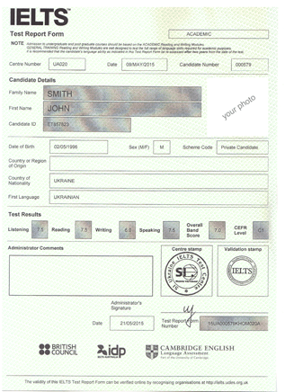
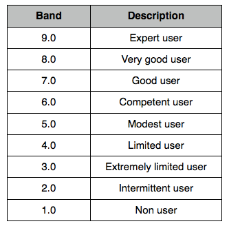

IELTS-up, your best IELTS guide
Are you preparing for IELTS? Seeking a place where you could find IELTS tips and tricks? Searching a site with a real-test-like collection of exam samples? Learning IELTS vocabulary? Searching useful IELTS exercises? Or maybe you are just studying English? Then this site is for you.
IELTS Listening
IELTS Reading
IELTS Writing
- About Writing Section
- Academic Writing task 1 samples
- General Writing task 1 samples
- Writing task 2 samples
- Writing exercises
- Writing vocabulary
IELTS Speaking
All you need to succeed in IELTS is here!
Our site is created to prepare you for IELTS and improve your English efficiently. Whatever your level of English is, you can find here everything you need to reach your aim score in IELTS!
To set your preparation strategy, you can use score maximizer.
You can also take trial IELTS.
See on this page:
About IELTS
IELTS is the International English Language Testing System, the world's most popular English language test.
It is designed to determine the level of English skills of people whose first language is not English. IELTS is the most demanded test of English for study and immigration, being taken by more than 2 million people each year.
IELTS is jointly owned by British Council, IDP: IELTS Australia and Cambridge English Language Assessment through more than 1,000 test centres and locations in over 140 countries.
See why take IELTS.
Academic vs. General
There are two versions of IELTS: Academic and General.
- Certificate of Academic IELTS is used for admission to schools, colleges and universities in English-speaking countries.
- The certificate General Training IELTS (and sometimes Academic IELTS) is mandatory for all who wish to immigrate to or work in UK, Canada, Australia, USA, New Zealand, etc.
It is advised not to consider a report older than two years to be valid, unless the user proves that he/she has worked to maintain his/her level of English.
Usually IELTS Academic is conducted once in two weeks and IELTS General once in four weeks.
IELTS consists of 4 parts:
The total time of IELTS is 2 hours 45 minutes. The listening, reading and writing parts are completed in one sitting in a common exam auditorium, while the speaking part is taken individually with an examiner on the same day or up to week before or after the other tests.
Listening and Speaking modules are the same for Academic and General IELTS, while Reading and Writing modules are different.
All the parts are evaluated on a scale from 0 to 9 points. The total score is counted as arithmetic mean of the four section scores.
IELTS results
The results are issued 13 days after the test.
There is no minimum score required to pass IELTS. IELTS score is evaluated on a scale from 0 to 9 points. The IELTS certificate is a Test Report Form. It is issued to all test takers with a score from "band 1" (non-user) to "band 9" (expert user) and each institution sets a different threshold.
IELTS certificate sample:
Overall IELTS scores are reported to the nearest half band (you can receive 7.5, 8.0, 8.5 for example).
If the overall score ends in .25, it is rounded up to the next half band (overall 6.25=6.5), and if it ends in .75, it is rounded up to the next whole band (overall 7.75=8.0).
Most top universities require 6.0-7.0 overall IELTS score for admission.
Each IELTS score corresponds to some level of English proficiency. Bands are described as follows:
